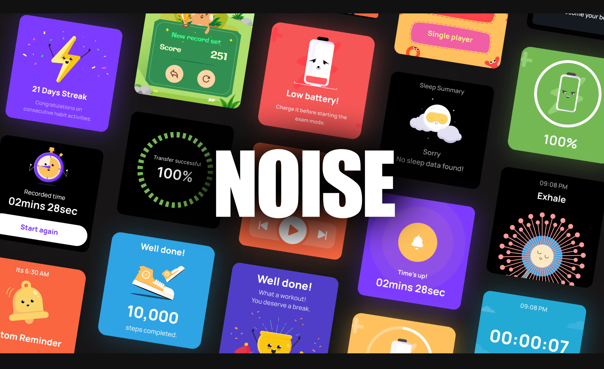
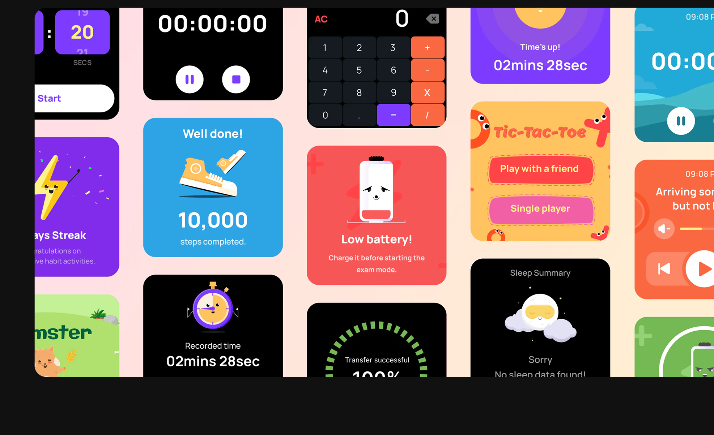
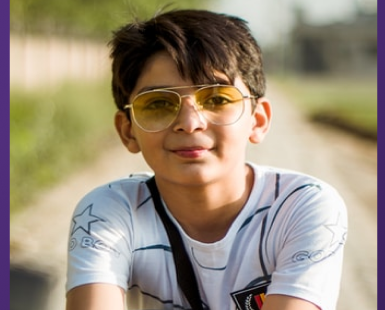
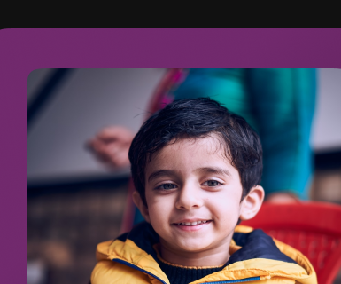

How we designed India's first child-friendly smartwatch parents could actually trust.
Noise is one of the leading smart-wearable and audio brands in India. Since 2014, the brand has expanded to various areas of the related market with its premium product quality at an unbeatable price.
Noise discovered a wide gap in the wearable market that targets the audience below the age of 13. This provided Noise with the opportunity to design an Indian smartwatch that targets the kid's audience, which brings a new layer to parenting, safety, and youth development.
Recognition
This product design project has been recognised by 2 awards
Problem Statement
How might we design an affordable smartwatch for Indian children aged 5–12 that blends playful experiences with practical features, giving both kids and parents confidence, safety, and enjoyment?

Overview
See the final smartwatch experience in action
A quick walkthrough of the Noise kids' smartwatch — from the playful watch faces and games to health tracking and the parental controls that make it a device parents can actually trust.
Research Summary
3 constraints that shaped every decision:
Desk Research
🏫
School ban = after-school focus
Smartwatches weren't allowed in class, so we needed to design for safety and routines outside class.
₹
₹2500 budget, 2–3 year lifespan
Kids outgrow devices fast, so smart UX is needed over premium sensors to keep costs down.
👨👩👧
Two audiences, one product.
Parents buy it, kids use it. Every choice has to balance trust + delight.
User and Audience
Why designing for a 7-year-old is nothing like designing for a 12-year-old
Desk Research
There were two categories in the user group — the primary group being the kids, and the secondary group being the parents or grandparents.
- Motor skills still developing: many are still learning to read time and dates.
- Cognitive load is limited: single-player games are enough challenge and satisfaction.
- HCI is heavily visual: icons, colours and images matter more than text.
- Extended interactions are not tedious: tapping and exploring feels like play.
- Can read, write, and do mental math confidently.
- Social identity becomes central: forming friendships and status in school are key.
- Prefer multiplayer online games: both cognitively ready and socially motivated.
- Tech-savvy and quick to adapt: they drop unsuccessful flows fast and expect efficiency.
- Parents decide, not kids. Interviewed decision-makers to find tech-related concerns and pain points worth solving.
- Safety over entertainment. Remote health and location monitoring ranked higher than games or features that create status gaps.
- Practical = acceptable. Utility-focused design reduces school rejection and social comparison issues.
User and Audience
Based on the data we gathered, we created representative personas for each of these segments.
User InterviewsQualitative Research

Frequent Apps / games / shows
YouTube — Gaming streaming
Ridhi Mehra (12)
Pain Points
- Needs reminders for his daily chores (homework)
- Has a limited time schedule for phone use
- No cellular support for his watch
Frequent Apps / games / shows
Shows: Aladdin, Oggy & Co
Apps: Subway Surfers, GClassroom
Ridhi Mehra (7)
Pain Points
- Small wrist and unable to carry a heavy watch
- Not familiar with smartwatch interface terminologies
Frequent Apps / games / shows
Shows: Shark Tank / Disney
Apps: FreeFire / Subway Surfers
Ridhi Mehra (12)
Pain Points
- The watch doesn't have YouTube installed in it
- The watch faces available are limited
- Mobile use is limited by time

Frequent Apps / games / shows
Shows: Oggy & Co / Doraemon
Ridhi Mehra (8)
Pain Points
- They are still learning "how to read time"
- Parents find it too small of an age to get them a smartwatch
Visual Research
Using visual data to shape tone, form, and feature priorities
Quantitive Research
What does the majority follow — fun or premiumness? This helps us create a desired tone and language for the watch.
What's the maximum preferred watch-dial shape by the target users? This helps the client finalize the watch-dial shape with the vendor.
NOISE CAN BE FUN.
NOISE CAN BE FUN.
NOISE CAN BE FUN.
NOISE CAN BE FUN.
NOISE CAN BE FUN.
NOISE CAN BE FUN.
Noise can be premium.
Noise can be premium.
Noise can be premium.
The best-preferred menu layout by the kids — this helps them discover the maximum possible features the watch has to offer.
Ideation
We explored everything the watch could be, then narrowed it down to what we could actually build.
Feature Mapping
Competitor Analysis
Kids View Access ControlParental control across app + watch, including exam and school time.
Lost modeIf the kid loses the watch, it displays a "please return" message.
Stress MonitoringHelps parents monitor if the kid is going through a tough situation.
Modes: School modeLocks everything and shows a default mode face for school timing.
Inbuilt AI AssistantAlexa / Google Assistant to improve the interface.
Goal Celebration — Kids ViewCelebrations, unlocking levels and watch faces.
Emergency FeatureRetrieve location and parental display in an emergency.
Persona Based
Health Behavior AnalysisMean of weekly activities gives a value of the child's performance.
Google Classroom AlertsApp notifications reflect on the watch ~10 mins before starting.
Return to Home Watch AlertParents enable alerts for kids to return home after playtime.
Time Limit Reminder
Games: Single Player BasedGames to entertain when they're inside the house.
Sleep Tracking
Music Control + Watch-facesShow and control music connected to the phone.
Out of the Bucket
Real-time location trackerParents track kids in the play-field.
Proximity FeatureAlerts parents when the child isn't around the proximity.
Geo-fencingNotification when the child crosses a set boundary.
Mood DetectionBy measuring the vitals.
Social CommunityFor nearby happenings and activities.
Watch Face CustomizationKids customize faces from the gallery using custom complications.
On-field play-mode syncFind kids around with "play-mode sync" to make new friends.
UI Team Sugestions
Interconnected social media (send emojis)
Watch Personality — Live Animated Character
Contact list on the watch
Guided Tutorials
Wash Hand / Sanitize Reminder
Watch Games High-score screenshots
Interactive watch-faces — real-time sunlight wallpapers
Personalised Elements
Your child is never alone with character companions
70% of children experience social isolation and boredom without nearby friends; introducing a personified assistive character can offer companionship in their daily routine.
Habit Formation Features
Independence through actions
We've designed a daily routine tracker for children that promotes independence and positive habit formation through streaks — fostering a competitive spirit and encouraging activity repetition.
Health and Fitness
A holistic approach to health and fitness
The watch features functions for tracking physical activity and health vitals, offering sports tailored for children, meditation, and a Health Behavior Analysis (HBA) percentage that helps parents monitor and improve their child's overall fitness.